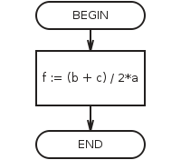

Assign is performance of various arithmetic and logical operations, when variables receive values.
Variable receives value only as a result of the assignment. Assignment can be done in two ways: using the assignment command and with the input command.
Although there is separate block in AFCE for assign operation for convenience, however, it refers to the process block and is designated as a process block on the flowchart.
Assignment has the following format:
variable: = expression
The symbol ":=" should be read as "assign".
You can write mathematical equality sign "=" instead of ": =" on the flowcharts.
Assignment command means the following steps executed by a computer:
1. Expression is calculated.
2. The variable takes the resulting value.
Execution of the assignment (picture from the program):
